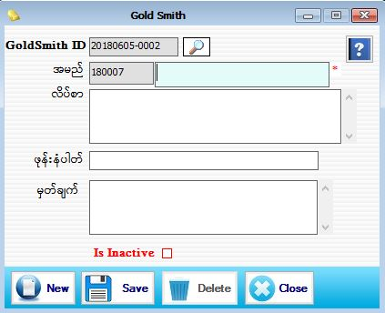

GoldSmith Setup

- Master Setup အောက်မှ GoldSmith Form ကိုနှိပ်ပါ။
- GoldSmith ID အား Software မှ Auto တပ်ပေးပါသည်။ GoldSmith ID -2017 သည် လက်ရှိရောက်နေသော Year ဖြစ်ပါသည်။ 07 သည်လက်ရှိရောက်နေသော Month ဖြစ်ပါသည်။ 31သည် လက်ရှိရောက်နေသော Day ဖြစ်ပါသည်။ 0001 သည် Serail အတိုင်း S/W မှ Auto တက်ပေးပါမည်။
- အမည် တွင် 180001 သည် GoldSmith Code ဖြစ်ပြီး Software မှ Serial အတိုင်း Auto တပ်ပေးပါသည်။ 18 သည် ခုနှစ်ဖြစ်ပြီး 0001သည် Serial No ဖြစ်သည်။ ထို့နောက် GoldSmith အမည်ကို မဖြစ်မနေဖြည့်စွက်ပေးရပါမည်။ လိပ်စာ ၊ ဖုန်းနံပါတ်၊ မှတ်ချက်တို့ကို ဖြည့်စွက်ပါ။ Is Inactive – အသုံးပြုသူသည် GoldSmith တစ်ယောက်ကို Is Inactive check box on ထားပါက Stock သတ်မှတ်ရာတွင်မြင်ရမည်မဟုတ်ပါ။
- Data များဖြည့်စွက်ပြီးပါက Save button ကိုနှိပ်ပြီးသိမ်းဆည်းရပါမည်။
- သိမ်းဆည်းပြီးသား Data များအား ပြန်လည်ကြည့်ခြင်း၊ ပြင်ဆင်ခြင်းများပြုလုပ်ချင်ပါက GoldSmith ID ၏ဘေးတွင် ရှိသော မှန်ဘီလူး button အားနှိပ်ပြီး ပြန်လည်ကြည့်ရှုပြင်ဆင်ချင်သော GoldSmith အားရွေးချယ်ပြီး ပြင်နိုင်ပါသည်။
- Data များကို ဖျက်ချင်လျှင် ဖျက်ချင်သော Data ကို မှန်ဘီလူး button အားနှိပ်ပြီးရှာပါ ။ ပြီးလျှင် Delete Button ကို နှိပ်ပြီး ဖျက်နိုင်ပါသည်။
- GoldSmith အသစ်အား ထပ်မံ ထည့်သွင်းလိုပါက New Button ကိုနှိပ်ပြီး အသစ်ထည့်နိုင်ပါသည်။
- GoldSmith Form အား အသုံးပြုပြီးပါက Close Button ကိုနှိပ်၍ ပိတ်နိုင်ပါသည်။